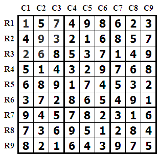

前言
采用回溯法最经典的例子是解决8皇后和迷宫的问题。不习惯走别人的路，所以下面介绍下用回溯法解数独游戏。写这个算法的起因是之前在玩数独游戏时，遇到了难解的专家模式，就想着写程序来暴力破解，是不是很无赖，啊哦……
数独介绍
数独（すうどく，Sūdoku），是源自18世纪瑞士发明，流传到美国，再由日本发扬光大的一种数学游戏。是一种运用纸、笔进行演算的逻辑游戏。玩家需要根据9×9盘面上的已知数字，推理出所有剩余空格的数字，并满足每一行、每一列、每一个粗线宫内的数字均含1-9，不重复。
数独盘面是个九宫，每一宫又分为九个小格。在这八十一格中给出一定的已知数字和解题条件，利用逻辑和推理，在其他的空格上填入1-9的数字。使1-9每个数字在每一行、每一列和每一宫中都只出现一次，所以又称“九宫格”。下图是一个完整的数独例子。

下图是iPad上一个数独游戏专家模式下的截图。81个格子，只给了17个数字，确实有点难度哈。

将上图转化成程序能够识别的输入，{1,1,9}表示第一行第一列的格子数字是9。
1
| {1,1,9},{1,2,1},{1,8,4},{3,4,5},{3,6,3},{4,1,5},{4,3,6},{4,6,8},{4,7,3},{6,5,1},{6,8,2},{6,9,4},{7,1,8},{7,3,5},{8,3,3},{9,5,4},{9,9,1}
|
运行程序，得出如下解：
9 1 7 | 6 8 2 | 5 4 3
3 5 2 | 1 9 4 | 7 6 8
6 8 4 | 5 7 3 | 1 9 2
————————–
5 9 6 | 4 2 8 | 3 1 7
4 2 1 | 7 3 6 | 9 8 5
7 3 8 | 9 1 5 | 6 2 4
————————–
8 7 5 | 2 6 1 | 4 3 9
1 4 3 | 8 5 9 | 2 7 6
2 6 9 | 3 4 7 | 8 5 1
————————–
仔细观察不难发现，每一行、每一列和每一个九宫格里都是数字1~9不重复。这就构成了一个数独的解。也证明，算法通过测试。
算法在解数独题时，在依次决定每个格子的数字时会根据之前已经填入的数字判断当前格子可能填入的数字，然后选择其中一个再去跳到下一个格子。当后面出现无解的情况（一个格子没有可填入的数字），就依次回退到上一个格子，选取下一个可能填入的数字，再依次执行下去。直到填入了最后一个格子，才算完成了数独的一个解。
回溯法思想
在包含问题的所有解的解空间树中，按照深度优先搜索的策略，从根结点出发深度探索解空间树。当探索到某一结点时，要先判断该结点是否包含问题的解，如果包含，就从该结点出发继续探索下去，如果该结点不包含问题的解，则逐层向其祖先结点回溯。（其实回溯法就是对隐式图的深度优先搜索算法）。 若用回溯法求问题的所有解时，要回溯到根，且根结点的所有可行的子树都要已被搜索遍才结束。 而若使用回溯法求任一个解时，只要搜索到问题的一个解就可以结束。
核心算法
1
2
3
4
5
6
7
8
9
10
11
12
13
14
15
16
17
18
19
20
21
22
23
24
25
26
27
28
29
30
31
32
33
34
35
36
37
38
|
void set_item(Item* items, int position) {
if (position==ROW*COLUMN) {
printf("第%d个\n",++count);
for (int i = 0; i < COLUMN * ROW; i++) {
printf("%3d", items[i].numbers[0]);
if ((i + 1) % COLUMN == 0)
printf("\n");
}
printf("\n");
return ;
}
if(items[position].choose!=0){
set_item(items, position + 1);
return;
}
int num =0;
while (( num= getUseableNum(items, position)) != 0) {
if (is_can_set(items, num, position) == 1) {
set_item(items, position + 1);
}
}
if (position != 0&&items[position].numbers[0]!=0)
goback(items, position);
}
|
测试算法代码段
1
2
3
4
5
6
7
8
|
Point points[17]={ {1,1,9},{1,2,1},{1,8,4},{3,4,5},{3,6,3},{4,1,5},{4,3,6},{4,6,8},{4,7,3},{6,5,1},{6,8,2},{6,9,4},{7,1,8},{7,3,5},{8,3,3},{9,5,4},{9,9,1} };
init_matrix(items, COLUMN * ROW);
init_point(items, points, 17);
set_item(items, 0);
|
附上用到的自定义的函数，用来决定当前格子可填入的数字的判断。
1
2
3
4
5
6
7
8
9
10
11
12
13
14
15
16
17
18
19
20
21
22
23
24
25
26
27
28
29
30
31
32
33
34
35
36
37
38
39
40
41
42
43
44
45
46
47
48
49
50
51
52
53
54
55
56
57
58
59
60
61
62
63
64
65
66
67
68
69
70
71
72
73
74
75
76
77
78
79
80
81
82
83
84
85
86
87
88
89
90
91
92
93
94
95
96
97
98
99
100
101
|
int getUseableNum(Item* items, int position) {
for (int i = 1; i < SCALE * SCALE + 1; i++) {
if (items[position].used[i] == 0 && items[position].numbers[i] == 0) {
return i;
}
}
return 0;
}
int is_can_set(Item* items, int num, int position) {
find_row(row_matrix, position);
for (int i = 1; i < SCALE * SCALE + 1; i++) {
if(items[row_matrix[i]].numbers[0]==num&&(items[row_matrix[i]].used[num]*items[row_matrix[i]].numbers[num])!=0){
items[position].used[num]=1;
return 0;
}
}
find_column(column_matrix, position);
for (int i = 1; i < SCALE * SCALE + 1; i++) {
if(items[column_matrix[i]].numbers[0]==num&&(items[column_matrix[i]].used[num]*items[column_matrix[i]].numbers[num])!=0){
items[position].used[num]=1;
return 0;
}
}
find_block(block_matrix, position);
for (int i = 1; i < SCALE * SCALE + 1; i++) {
if(items[block_matrix[i]].numbers[0]==num&&(items[block_matrix[i]].used[num]*items[block_matrix[i]].numbers[num])!=0){
items[position].used[num]=1;
return 0;
}
}
if (items[position].numbers[0] != 0) {
changeItemNum(items, row_matrix, items[position].numbers[0],
SCALE * SCALE + 1, -1);
changeItemNum(items, column_matrix, items[position].numbers[0],
SCALE * SCALE + 1, -1);
changeItemNum(items, block_matrix, items[position].numbers[0],
SCALE * SCALE + 1, -1);
}
items[position].numbers[0] = num;
changeItemNum(items, row_matrix, num, SCALE * SCALE + 1, 1);
changeItemNum(items, column_matrix, num, SCALE * SCALE + 1, 1);
changeItemNum(items, block_matrix, num, SCALE * SCALE + 1, 1);
items[position].used[num] = 1;
return 1;
}
void goback(Item* items, int position) {
int currentNum = items[position].numbers[0];
find_row(row_matrix, position);
changeItemNum(items, row_matrix, currentNum, SCALE * SCALE + 1, -1);
find_column(column_matrix, position);
changeItemNum(items, column_matrix, currentNum, SCALE * SCALE + 1, -1);
find_block(block_matrix, position);
changeItemNum(items, block_matrix, currentNum, SCALE * SCALE + 1, -1);
items[position].numbers[0]=0;
for (int i = 1; i < SCALE * SCALE + 1; i++) {
items[position].used[i] = 0;
}
}
void changeItemNum(Item* items, int* matrix, int num, int length, int flag) {
for (int i = 1; i < length; i++) {
int position = matrix[i];
items[position].numbers[num] += flag;
}
}
|
小结
这个算法，不仅可以用来解数独题，还可以用来遍历数独所有的终盘，由于9x9的数独，终盘数量巨大，共6,670,903,752,021,072,936,960（约为6.67×10^21）种组合，程序一直运行不完结果。如果对这个值没有概念，请试想将所有的终盘存在txt文本中，只存储数字将占用6.07x10^9 TB存储空间，相信没有哪台电脑能够做到。换句话说，我电脑CPU的主频是2.4GHz，意思是1秒钟执行2.4x10^12条指令，假设解出一种终盘需要一条指令（事实上远大于1条），消耗的时间是88年，本宝宝等不了那么久。庆幸的是4x4 的数独只有288个终盘，程序还是能够很快的完美输出所有解。为什么两者差别这么大，因为穷举法数独的算法时间复杂度是T= n^(n^2).
n = 4时，T = 4294967296。n = 9时，T= 1.97Ex10^77。呵呵哒……

 wechat
wechat alipay
alipay